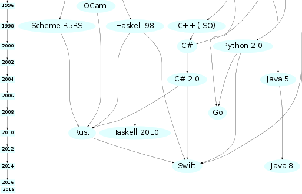

namespace HelloWorld {
class Hello {
static void Main() {
System.Console.WriteLine("Hello World");
}
}
}
package main
import "fmt"
func main() {
fmt.Println("hello world")
}
console.info("Hello World");
puts "Hello World"
fn main() {
println!("Hello World")
}
def fact(n)
return 1 if n == 0
n * fact(n-1)
end
puts fact(5)
fn fact(n: u32) -> u32 {
match n {
0 => 1,
i => i * fact(i-1)
}
}
fn main() {
println!("{}", fact(5))
}
fn fact(n: u32) -> u32 {
let mut acc = 1;
for num in 2..=n {
acc *= num;
}
acc
}
fn main() {
println!("{}", fact(5))
}
let mut2..=n
def fact(n)
(2..n).inject(1) { |acc, num| acc * num }
end
fn fact(n: u32) -> u32 {
(2..=n).fold(1, |acc, num| acc * num)
}
take a string, return the sum of numbers
def sum_numbers(s)
s.split.map(&:to_i).sum
end
fn sum_numbers(s: &str) -> u32 {
s.split_whitespace()
.map(|x| x.parse::<u32>().unwrap())
.sum()
}
fn sum_numbers(s: &str) -> u32 {
s.split_whitespace()
.map(|x| x.parse::<u32>().expect("number is not an integer"))
.sum()
}
::<u32> - similar to generics in C#unwrap/expectmaybe ignore non-integer numbers?
fn sum_numbers(s: &str) -> u32 {
s.split_whitespace()
.map(|x| parse_number(x))
.sum()
}
fn parse_number(x: &str) -> u32 {
match x.parse() {
Ok(number) => number,
Err(_details) => 0 // ignore non-int numbers
}
}
given the two variables, generate a template
code = 'my-code'
name = 'my-name'
ERB.new(File.read('my-template')).result(binding)
format!(
include_str!("my-template"),
code = "my-code",
name = "my-name"
)
this is how printing works
println!("{}", 123); // ✅
println!("Key={k}, Value={v}", k = "k", v = 99); // ✅
println!("Key={}, Value={}", 42);
// error: 2 positional arguments in format string,
// but there is 1 argument